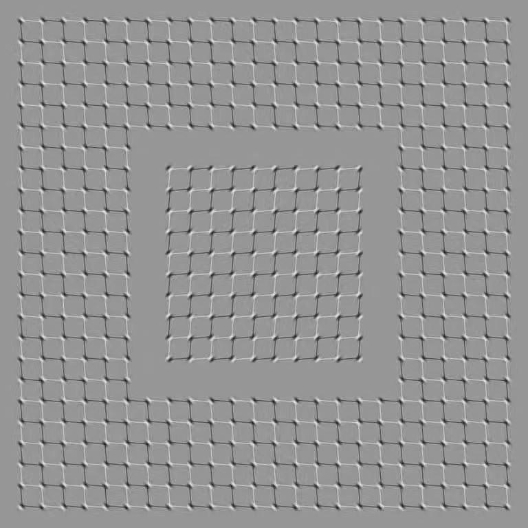

为什么对比敏感度的视标亮度是正弦变化的？(1)
线性系统
线性，是说一个函数如果满足： f(a+b)=f(a)+f(b) f(m x)=m f(x) 那么就说这个函数是线性的，最简单的，比如f(x)=2x。 f(a+b)=2(a+b)=2a+2b=f(a)+f(b) f(m x)=2mx=m(2x)=m f(x)
我们可以把函数当作是一个变换过程，把输入变换成输出。 一个医生看一个结膜炎用3分钟，看2个结膜炎用6分钟。这个医生看病的能力是“线性”的。
非线性的人体
人体通常情况下不是线性的。著名的例子，比如吃一个苹果1分钟，吃9个苹果用多久？
再比如医生们超级反感的朋友圈养生指南最喜欢的”酸碱体质”，也是把人体酸碱平衡错误理解成了线性系统，完全不管磷酸盐缓冲这么一回事。
视觉
视觉是一种知觉，而不仅仅是感觉。知觉是要中枢神经系统参与处理的，CNS处理的过程可不一定是线性的。

不过仅仅从单眼成像的过程考虑，通常，人眼单眼的成像过程倒是可以近似看作是线性的。
比如，在人面前点亮一盏灯，可以看到一盏灯，再点亮另一盏灯，看到的是两盏灯，它们之间并没有什么干扰。
在后续的讨论中，我们把人眼单眼成像的过程当作是线性过程来考虑。
注释
Comments powered by Disqus